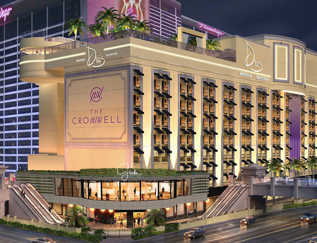

<template>
  <div class="MainContainer">
    <div class="TitleImg center">
      
    </div>
    <div class="single-wide">
      <h3>VDF's Top Pick for Best Casino to Gamble at on the Strip... </h3>
      <h1><a href="/#/Hotels/TheCromwell">The Cromwell </a> </h1>
      
      <h5>The 40,000-square-foot casino at The Cromwell boasts a number of player-friendly gaming amenities that make playing here a great bet on the Vegas Strip. It's no wonder The Cromwell was named a "Top 10 Best U.S. Casino" by USA Today in their Reader's Choice awards. </h5>
      <hr/>
      <h5>Visit The Cromwell Today For:  </h5>
      <ul>
        <li>100X Odds on Craps – If you enjoy rolling the dice, you'll find generous 100X odds on craps (the only location offering these odds on the Strip) as well as affordable table limits at The Cromwell. </li>
        <li>3-2 Shoe and Double-Deck Blackjack – For those who like classic gaming, blackjack at The Cromwell offers terrific value with some of the lowest minimum bets on the Strip. </li>
        <li>Single “0” Roulette – This table game, also known as European roulette, was previously found primarily only in high-limit areas. At The Cromwell you can find Single "0" Roulette on the main casino floor with approachable table limits. </li>
        <li>Commission Free EZ Baccarat - The popular EZ Baccarat is played the same way as traditional baccarat with the same drawing rules. With EZ Baccarat, taking a 5 percent commission after every winning Bank hand is eliminated.   </li>
        <li>In addition to all the great table game options like blackjack, craps, mini baccarat and Pai Gow poker, the casual eatwell restaurant offers food options 24 hours daily, conveniently located near the casino floor. Grab a cocktail and enjoy free entertainment at the nearby Interlude casino bar. </li>
      </ul>
      <h5>"I like to think of the world as a sort of a casino, except the house doesn't have the advantage. If you're smart, you have an advantage. It behooves you to place a lot of bets".  </h5>
      <h6><i>Evan Williams  </i></h6>
    </div>
  </div>

</template>
